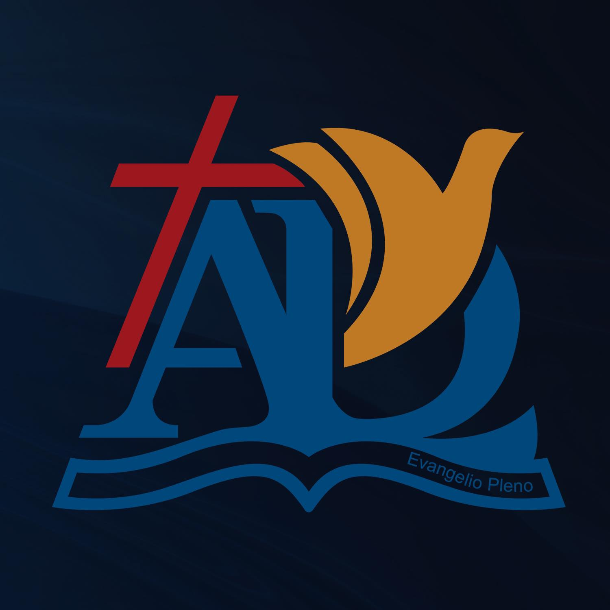

Nuestra Historia y Propósito
La Asambleas de Dios es una organización eclesiástica dedicada a la propagación del evangelio de Jesucristo,
la formación de creyentes y el servicio a la comunidad. Desde nuestra fundación en [Año de
Fundación], hemos sido un faro de esperanza, creciendo y adaptándonos para cumplir la gran
comisión en un mundo en constante cambio. Nuestra historia es un testimonio de la gracia divina y el
compromiso inquebrantable de nuestros miembros.

Nuestro Liderazgo
Conozca a nuestro equipo de liderazgo, dedicado a guiar a nuestra Iglesia Asambleas de Dios con sabiduría,
visión y conforme a los principios bíblicos. Cada uno de ellos sirve con un corazón apasionado por Dios y
por el crecimiento de su pueblo.

Isaías Olmos
Pastor Titular
Dulce Nelia
Pastora Titular / Directora de Ministerios
Yovanny Benítez
Encargado de Escuela Bíblica

Junta de Diaconos
Dirección de Operaciones de la Iglesia

Rubén Francisco Pimentel
Encargado de Finanzas
Katiana Sosa
Secretaria General
Para más información sobre nuestra estructura de liderazgo y los pastores que nos sirven, por favor contacte
nuestra oficina central o revise nuestros estatutos disponibles en la sección de Recursos.
Equipo Administrativo
El equipo administrativo está conformado por profesionales y servidores talentosos que trabajan
incansablemente para el buen funcionamiento de todas las áreas de la Iglesia, desde la gestión de recursos
hasta la planificación de eventos y proyectos. Su labor es fundamental para apoyar la misión y visión,
garantizando que todos los ministerios operen con eficiencia y excelencia.
Ellos son el motor detrás de la organización, asegurando que los recursos se utilicen de manera efectiva para
alcanzar nuestros objetivos espirituales y comunitarios.